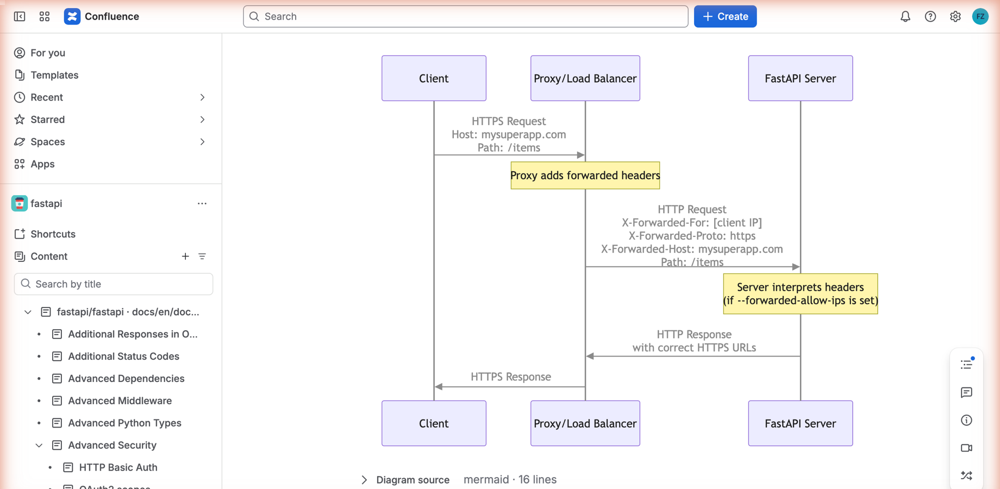
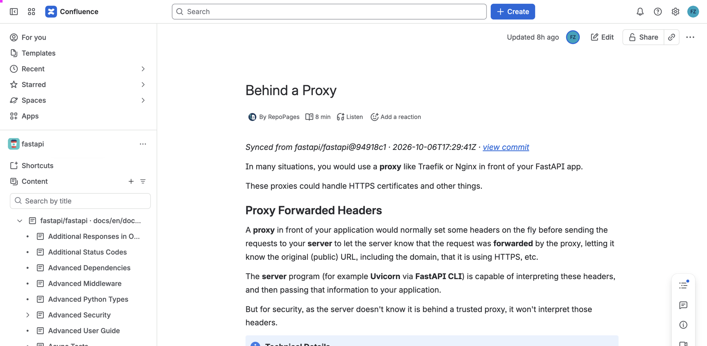
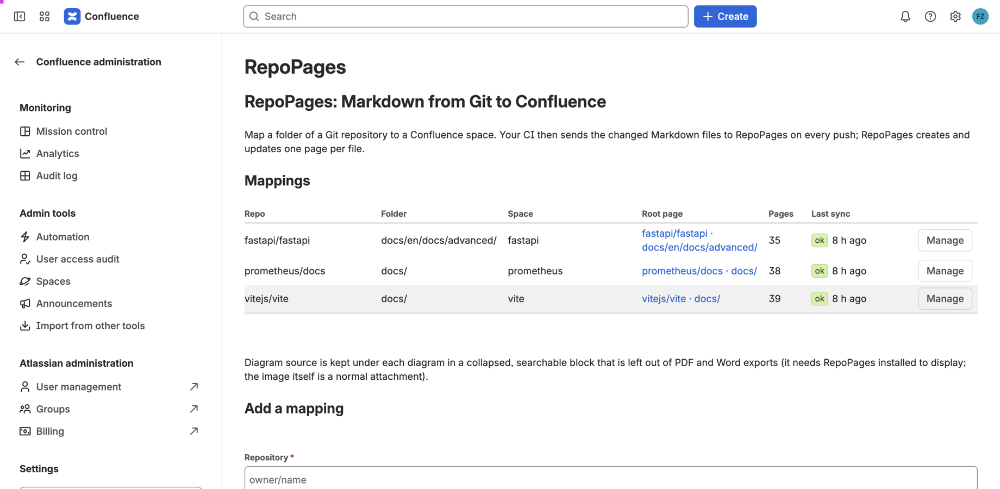

Markdown and diagrams from Git published as real Confluence pages, pushed by your CI on every commit, searchable, with history.
Built on Atlassian Forge with no outbound connections, so your documents never leave Atlassian.
Set up in five minutes See the demo repo
Developers keep writing Markdown next to the code. Everyone else reads it in Confluence, where they already are.
Your CI sends the files a commit changed; RepoPages creates or updates one Confluence page per Markdown file within seconds.
Pages are searchable, versioned, exportable to PDF and Word, and readable on mobile, like any page a person wrote. Each one carries a byline with the commit that wrote it.

Mermaid and PlantUML blocks become crisp SVG images, with the source kept searchable underneath. Folders become parent pages, relative links become page links, front matter and the first heading set the title.
RepoPages never connects to your Git host. The push is signed with a secret you create in Confluence, so the app holds no token and makes no outbound calls. Eligible for Runs on Atlassian.
Works with GitHub, GitLab, Bitbucket, Jenkins or any CI that can run a script or a container.

Three steps, no agent, no polling.
On the RepoPages settings screen in Confluence: repository, folder, target space, optional parent page. You get a sync URL and a signing secret.
The GitHub Action, the Docker image, or a single Python file. Store the URL and the secret in your CI's secret store.
Changed files are rendered, signed and sent. RepoPages writes the pages. Renames move pages, deletions archive them, unchanged files create no new version.
One workflow file. GitLab CI, Jenkins and any other CI use the Docker image or the script.
# .github/workflows/repopages.yml
name: RepoPages
on:
push:
branches: [main]
paths: ['**/*.md']
jobs:
sync:
runs-on: ubuntu-latest
steps:
- uses: actions/checkout@v4
with:
fetch-depth: 2
- uses: repopages-app/ci@v1
with:
url: ${{ secrets.REPOPAGES_URL }}
secret: ${{ secrets.REPOPAGES_SECRET }}
prefix: docs/Run it once by hand with full_import to create pages for everything that already exists. From then on every merge sends only what changed. Full documentation in the client repository.